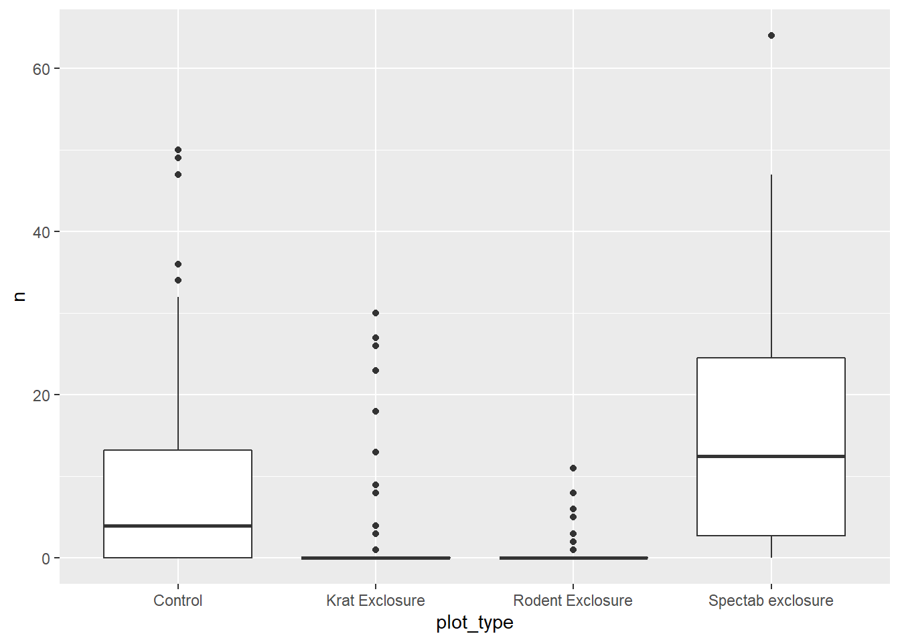
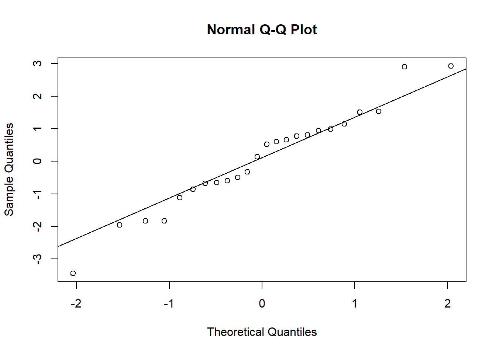
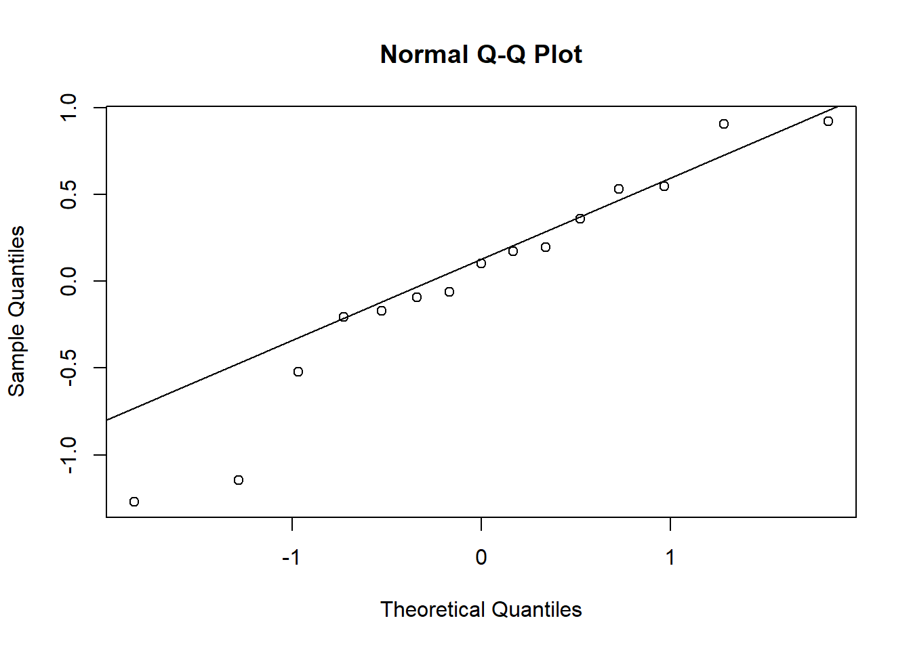
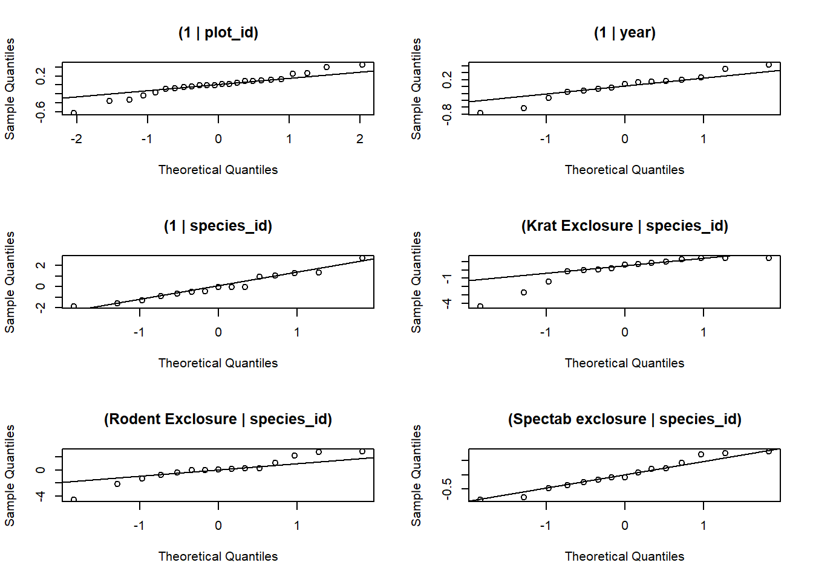
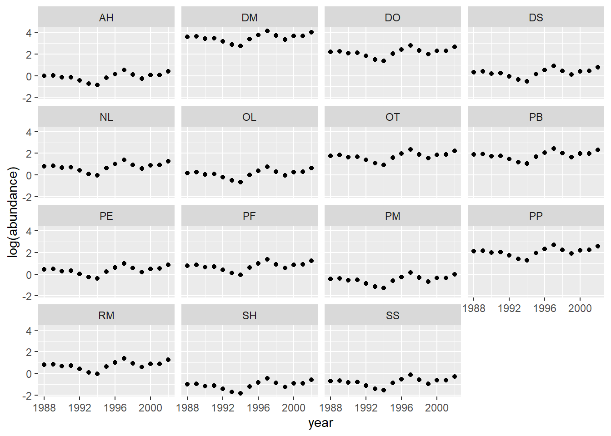

Generalized linear mixed models - Solutions
Data
For this laboratory we will use the Portal database, already presented in Lab 2, which contains long-term monitoring data for several rodent species at a study site in Arizona.
Ernest, M., Brown, J., Valone, T. and White, E.P. (2018) Portal Project Teaching Database. https://figshare.com/articles/Portal_Project_Teaching_Database/1314459.
This database consists of three data tables:
- portal_surveys.csv contains information on each captured individual.
surveys <- read.csv("../donnees/portal_surveys.csv")
str(surveys)## 'data.frame': 35549 obs. of 9 variables:
## $ record_id : int 1 2 3 4 5 6 7 8 9 10 ...
## $ month : int 7 7 7 7 7 7 7 7 7 7 ...
## $ day : int 16 16 16 16 16 16 16 16 16 16 ...
## $ year : int 1977 1977 1977 1977 1977 1977 1977 1977 1977 1977 ...
## $ plot_id : int 2 3 2 7 3 1 2 1 1 6 ...
## $ species_id : chr "NL" "NL" "DM" "DM" ...
## $ sex : chr "M" "M" "F" "M" ...
## $ hindfoot_length: int 32 33 37 36 35 14 NA 37 34 20 ...
## $ weight : int NA NA NA NA NA NA NA NA NA NA ...- portal_species.csv gives the genus, species and taxonomic group corresponding to each species ID.
species <- read.csv("../donnees/portal_species.csv")
str(species)## 'data.frame': 54 obs. of 4 variables:
## $ species_id: chr "AB" "AH" "AS" "BA" ...
## $ genus : chr "Amphispiza" "Ammospermophilus" "Ammodramus" "Baiomys" ...
## $ species : chr "bilineata" "harrisi" "savannarum" "taylori" ...
## $ taxa : chr "Bird" "Rodent" "Bird" "Rodent" ...- portal_plots.csv indicates the type of treatment applied to each plot: “Control” = control, no fence; “Rodent Exclosure” = fence to exclude all rodents; “Long-term Krat Exclosure” or “Short-term Krat Exclosure” = fence with gate to exclude kangaroo rats of the genus Dipodomys. “Spectab exclosure” = fence with gate to exclude only the species Dipodomys spectabilis.
plots <- read.csv("../donnees/portal_plots.csv")
str(plots)## 'data.frame': 24 obs. of 2 variables:
## $ plot_id : int 1 2 3 4 5 6 7 8 9 10 ...
## $ plot_type: chr "Spectab exclosure" "Control" "Long-term Krat Exclosure" "Control" ...1. Preparation of data
- From the
surveystable, only keep individuals observed since 1988 that correspond to rodents (taxa == "Rodent"in thespeciestable).
Solution
The surveys and species tables must be joined before applying a filter for the year and taxonomic group.
library(dplyr)
surveys <- inner_join(surveys, species) %>%
filter(year >= 1988, taxa == "Rodent")- Select the 15 most abundant species from the data frame obtained in (a), then count the number of individuals for each of these species, by year and plot. Include a count of 0 for plots and years where the species is absent.
Solution
- First, we count the number of observations in
surveysby species withcount(which produces a table with 2 columns,species_idandn), then we keep the 15 most abundant withtop_n. Thensemi_joinkeeps only the rows ofsurveysthat correspond to one of the species in the top 15; unlikeinner_join,semi_joindoes not attach new columns tosurveys.
compte_esp <- count(surveys, species_id) %>%
top_n(15, wt = n) # wt = n means to take the top 15 according to n
surveys <- semi_join(surveys, compte_esp)## Joining, by = "species_id"- We then use the
countfunction to count the number of individuals by species, plot and year. Finally, we apply thecompletefunction of thetidyrpackage to add the zeros in thencolumn for the combinations of species, plot and year without observations.
abond <- count(surveys, species_id, plot_id, year)
library(tidyr)
abond <- complete(abond, species_id, plot_id, year, fill = list(n = 0))
str(abond)## tibble [5,400 x 4] (S3: tbl_df/tbl/data.frame)
## $ species_id: chr [1:5400] "AH" "AH" "AH" "AH" ...
## $ plot_id : int [1:5400] 1 1 1 1 1 1 1 1 1 1 ...
## $ year : int [1:5400] 1988 1989 1990 1991 1992 1993 1994 1995 1996 1997 ...
## $ n : num [1:5400] 0 0 0 1 0 0 0 0 0 0 ...Note that the number of rows in abond is equal to the product of the number of species, plots and years (15 x 24 x 15 = 5400).
- Recode the two treatments “Long-term Krat Exclosure” and “Short-term Krat Exclosure” into one treatment, “Krat Exclosure”, and join the
plotdata frame to the data frame obtained in (b).
Solution
plots$plot_type[grepl("Krat", plots$plot_type)] <- "Krat Exclosure"
abond <- inner_join(abond, plots)## Joining, by = "plot_id"str(abond)## tibble [5,400 x 5] (S3: tbl_df/tbl/data.frame)
## $ species_id: chr [1:5400] "AH" "AH" "AH" "AH" ...
## $ plot_id : int [1:5400] 1 1 1 1 1 1 1 1 1 1 ...
## $ year : int [1:5400] 1988 1989 1990 1991 1992 1993 1994 1995 1996 1997 ...
## $ n : num [1:5400] 0 0 0 1 0 0 0 0 0 0 ...
## $ plot_type : chr [1:5400] "Spectab exclosure" "Spectab exclosure" "Spectab exclosure" "Spectab exclosure" ...Note: The function grepl(pattern, x) returns TRUE or FALSE depending on whether or not the variable x contains the given text pattern.
2. Modeling the abundance of a species
For this part, we limit ourselves to the data of the species Dipodomys ordii (DO), Ord’s kangaroo rat.

- Visualize the distribution of the number of individuals of species DO according to the type of treatment. What type of model would be appropriate to model this relationship? (Ignore the effects of other variables at this point.) Estimate the model parameters and check whether the resulting coefficients qualitatively match the expected effects of each treatment.
Solution
abond_do <- filter(abond, species_id == "DO")
library(ggplot2)
# Here's one option with boxplots
ggplot(abond_do, aes(x = plot_type, y = n)) +
geom_boxplot()
These are count data with several zeros (especially for “Krat Exclosure” and “Rodent Exclosure”) and a variance that increases with the mean, so Poisson regression would potentially be appropriate.
do_glm <- glm(n ~ plot_type, data = abond_do, family = poisson)
summary(do_glm)##
## Call:
## glm(formula = n ~ plot_type, family = poisson, data = abond_do)
##
## Deviance Residuals:
## Min 1Q Median 3Q Max
## -5.6214 -1.7272 -1.0954 -0.3422 11.0933
##
## Coefficients:
## Estimate Std. Error z value Pr(>|z|)
## (Intercept) 2.21375 0.03018 73.355 <2e-16 ***
## plot_typeKrat Exclosure -1.81386 0.08061 -22.503 <2e-16 ***
## plot_typeRodent Exclosure -2.72458 0.13939 -19.547 <2e-16 ***
## plot_typeSpectab exclosure 0.54626 0.05496 9.939 <2e-16 ***
## ---
## Signif. codes: 0 '***' 0.001 '**' 0.01 '*' 0.05 '.' 0.1 ' ' 1
##
## (Dispersion parameter for poisson family taken to be 1)
##
## Null deviance: 4900.6 on 359 degrees of freedom
## Residual deviance: 3154.8 on 356 degrees of freedom
## AIC: 3715.1
##
## Number of Fisher Scoring iterations: 7The negative effect of the “Rodent Exclosure” and “Krat Exclosure” treatments is expected since it is a species of kangaroo rat that should be excluded by these two treatments. The positive effect of “Spectab Exclosure” could be due to the fact that this treatment excludes another kangaroo rat species that competes with it.
- Now add to the model in (a) random effects of plot and year. Which of these two grouping variables has the greatest effect on the response? Explain how and why the standard errors of the fixed effects changed between this model and the model in the previous question.
Solution
library(lme4)## Loading required package: Matrix##
## Attaching package: 'Matrix'## The following objects are masked from 'package:tidyr':
##
## expand, pack, unpackdo_glmm <- glmer(n ~ plot_type + (1 | plot_id) + (1 | year),
data = abond_do, family = poisson)
summary(do_glmm)## Generalized linear mixed model fit by maximum likelihood (Laplace
## Approximation) [glmerMod]
## Family: poisson ( log )
## Formula: n ~ plot_type + (1 | plot_id) + (1 | year)
## Data: abond_do
##
## AIC BIC logLik deviance df.resid
## 2023.4 2046.7 -1005.7 2011.4 354
##
## Scaled residuals:
## Min 1Q Median 3Q Max
## -4.0898 -0.9805 -0.3705 0.0488 8.4756
##
## Random effects:
## Groups Name Variance Std.Dev.
## plot_id (Intercept) 2.6616 1.6314
## year (Intercept) 0.4198 0.6479
## Number of obs: 360, groups: plot_id, 24; year, 15
##
## Fixed effects:
## Estimate Std. Error z value Pr(>|z|)
## (Intercept) 1.3761 0.6072 2.266 0.02344 *
## plot_typeKrat Exclosure -2.8076 0.8561 -3.280 0.00104 **
## plot_typeRodent Exclosure -2.6221 0.9108 -2.879 0.00399 **
## plot_typeSpectab exclosure 1.0017 1.2941 0.774 0.43891
## ---
## Signif. codes: 0 '***' 0.001 '**' 0.01 '*' 0.05 '.' 0.1 ' ' 1
##
## Correlation of Fixed Effects:
## (Intr) plt_KE plt_RE
## plt_typKrtE -0.650
## plt_typRdnE -0.613 0.439
## plt_typSpce -0.433 0.305 0.288The standard deviation of the variation between plots (1.63) is greater than the standard deviation of the variance between years (0.65).
The standard errors of the fixed effects are larger than those of the model without random effects; this is because the mixed model accounts for the fact that observations from the same plot are correlated, which gives less statistical power than a completely independent sample, especially when the treatment is applied at the plot level.
- Check that the model assumptions in (b) are met, especially the dispersion of residuals and the normality of random effects. If overdispersion occurs, estimate the coefficient of dispersion.
Solution
There is a significant overdispersion (coefficient of 3.59).
chi2 <- sum(residuals(do_glmm, type = "pearson")^2)
1 - pchisq(chi2, df = df.residual(do_glmm))## [1] 0chi2 / df.residual(do_glmm)## [1] 3.591732Random effects of plot and year follow a normal distribution except for some extreme values.
re <- ranef(do_glmm)
qqnorm(re$plot_id$`(Intercept)`)
qqline(re$plot_id$`(Intercept)`)
qqnorm(re$year$`(Intercept)`)
qqline(re$year$`(Intercept)`)
3. Modeling several species
Now let’s take the complete dataset produced in Part 1, the 15 most abundant species.
- Use a model without random effects to estimate abundance by species, type of treatment and their interaction. Based on the description of the experiment, why is it important to include the interaction here?
Solution
The interaction means that the effect of treatments varies from one species to another. It is important to consider it because the treatments were designed to exclude different species.
glm_sp <- glm(n ~ plot_type * species_id, data = abond, family = poisson)- Fit a model equivalent to (a), except that the species is a random rather than a fixed effect. Name one advantage and one disadvantage of this choice.
Note: If the GLMM is having trouble converging, we can specify the control argument to glmer to increase the maximum number of iterations or to change the optimizer. In this case, changing the optimizer to bobyqa with control = glmerControl(optimizer = "bobyqa") should fix the problem.
Solution
By including a random effect of the species on the intercept and the treatment coefficients, we obtain the equivalent of an interaction.
The GLMM uses information from all species to estimate the effect of treatments on each species. This can be advantageous to compensate for the lack of observations of rare species. However, for very different species, it may not be reasonable to assume that their response to treatments comes from the same normal distribution.
glmm_sp <- glmer(n ~ plot_type + (1 + plot_type | species_id),
data = abond, family = poisson,
control = glmerControl(optimizer = "bobyqa"))
summary(glmm_sp)## Generalized linear mixed model fit by maximum likelihood (Laplace
## Approximation) [glmerMod]
## Family: poisson ( log )
## Formula: n ~ plot_type + (1 + plot_type | species_id)
## Data: abond
## Control: glmerControl(optimizer = "bobyqa")
##
## AIC BIC logLik deviance df.resid
## 39024.6 39116.9 -19498.3 38996.6 5386
##
## Scaled residuals:
## Min 1Q Median 3Q Max
## -5.829 -1.241 -0.792 0.137 32.183
##
## Random effects:
## Groups Name Variance Std.Dev. Corr
## species_id (Intercept) 1.4864 1.2192
## plot_typeKrat Exclosure 2.7669 1.6634 -0.31
## plot_typeRodent Exclosure 3.5819 1.8926 -0.35 0.84
## plot_typeSpectab exclosure 0.3055 0.5527 0.27 0.08 0.18
## Number of obs: 5400, groups: species_id, 15
##
## Fixed effects:
## Estimate Std. Error z value Pr(>|z|)
## (Intercept) 0.8500 0.3147 2.701 0.00692 **
## plot_typeKrat Exclosure -0.3842 0.4259 -0.902 0.36692
## plot_typeRodent Exclosure -1.3993 0.4899 -2.856 0.00428 **
## plot_typeSpectab exclosure -0.3077 0.1532 -2.009 0.04457 *
## ---
## Signif. codes: 0 '***' 0.001 '**' 0.01 '*' 0.05 '.' 0.1 ' ' 1
##
## Correlation of Fixed Effects:
## (Intr) plt_KE plt_RE
## plt_typKrtE -0.309
## plt_typRdnE -0.338 0.810
## plt_typSpce 0.242 0.079 0.168- With the
expand.gridfunction, create a data set for predictions that contains all combinations of treatment and species.
pred_df <- expand.grid(plot_type = unique(abond$plot_type),
species_id = unique(abond$species_id))Calculate for each combination the predicted abundance according to the models in (a) and (b), using the predict function. Visualize the predicted values. Is there shrinkage of the estimates for the mixed model?
Note: By default, the predictions of a GLM(M) are on the scale of the linear predictor. For predictions on the scale of the response, specify the argument type = "response".
Solution
pred_df <- expand.grid(plot_type = unique(abond$plot_type),
species_id = unique(abond$species_id))
pred_df$pred_glm <- predict(glm_sp, newdata = pred_df)
pred_df$pred_glmm <- predict(glmm_sp, newdata = pred_df)
ggplot(pred_df, aes(x = species_id)) +
labs(y = "log(abondance)") +
geom_point(aes(y = pred_glm), color = "red") +
geom_point(aes(y = pred_glmm), color = "darkblue") +
facet_wrap(~ plot_type)
On the scale of the linear predictor (thus the logarithm of abundance), we see that the predictions of the mixed model (in blue) are shrunk towards the mean, especially for the rarer species DS, SH and SS. This effect is less obvious on the scale of the response (graph below) because both values are close to 0.
pred_df$pred_glm <- predict(glm_sp, newdata = pred_df, type = "response")
pred_df$pred_glmm <- predict(glmm_sp, newdata = pred_df, type = "response")
ggplot(pred_df, aes(x = species_id)) +
labs(y = "abondance") +
geom_point(aes(y = pred_glm), color = "red") +
geom_point(aes(y = pred_glmm), color = "darkblue") +
facet_wrap(~ plot_type)
- Add the random effects of plot and year on the model in (b) and verify the goodness of fit.
glmm_sp2 <- glmer(n ~ plot_type + (1 + plot_type | species_id) + (1 | plot_id) + (1 | year),
data = abond, family = poisson,
control = glmerControl(optimizer = "bobyqa"))The model is overdispersed.
chi2 <- sum(residuals(glmm_sp2, type = "pearson")^2)
1 - pchisq(chi2, df = df.residual(glmm_sp2))## [1] 0chi2 / df.residual(glmm_sp2)## [1] 6.713591For this model, there are 6 random effects (plot, year, and species with each of the 4 treatments).
re <- ranef(glmm_sp2)
par(mfrow = c(3,2))
qqnorm(re$plot_id$`(Intercept)`, main = "(1 | plot_id)")
qqline(re$plot_id$`(Intercept)`)
qqnorm(re$year$`(Intercept)`, main = "(1 | year)")
qqline(re$year$`(Intercept)`)
qqnorm(re$species_id$`(Intercept)`, main = "(1 | species_id)")
qqline(re$species_id$`(Intercept)`)
qqnorm(re$species_id$`plot_typeKrat Exclosure`, main = "(Krat Exclosure | species_id)")
qqline(re$species_id$`plot_typeKrat Exclosure`)
qqnorm(re$species_id$`plot_typeRodent Exclosure`, main = "(Rodent Exclosure | species_id)")
qqline(re$species_id$`plot_typeRodent Exclosure`)
qqnorm(re$species_id$`plot_typeSpectab exclosure`, main = "(Spectab exclosure | species_id)")
qqline(re$species_id$`plot_typeSpectab exclosure`)
- Finally, use a strategy similar to (c) to obtain predictions of the mean abundance of each species in the control plots as a function of year.
Note: By default, predict takes into account all random effects. To consider only some effects but not others, specify the re.form argument to predict. For example, re.form = ~(1 | year) considers the effect of the year only. To ignore all random effects in predictions, write re.form = ~0.
Solution
# We take all combinations of species and year
# then add constant columns for the treatment and plot
pred_df2 <- expand.grid(species_id = unique(abond$species_id),
year = unique(abond$year))
pred_df2$plot_type <- "Control"
pred_df2$plot_id <- NA # no known plot ID
# For predictions, we ignore the plot effect
pred_df2$pred <- predict(glmm_sp2, newdata = pred_df2,
re.form = ~ (1 + plot_type | species_id) + (1 | year))
ggplot(pred_df2, aes(x = year, y = pred)) +
labs(y = "log(abundance)") +
geom_point() +
facet_wrap(~ species_id)
Note: Here, all trends are parallel, because in this model, the effect of year and species are additive on the log (abundance) scale.